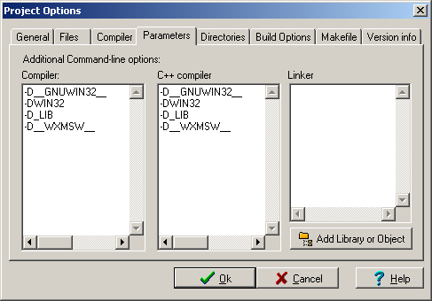
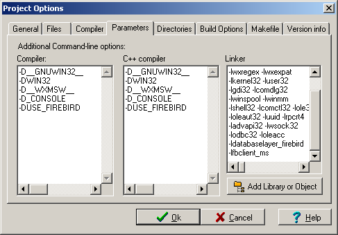
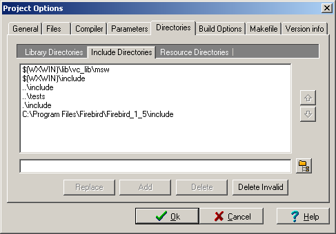

(If you have the WXWIN environmental variable defined and you are using the pre-compiled wxDev-Cpp wxWidgets libraries, then you may wish to remove the WXWIN paths from the include directories to avoid conflicts.)

(If you have the WXWIN environmental variable defined and you are using the pre-compiled wxDev-Cpp wxWidgets libraries, then you may wish to remove the WXWIN paths from the include directories to avoid conflicts.)

Save the project through the menu "File -> Save All" and then attempt to compile the project via the menu "Execute -> Compile"
If all goes well, a static library file name libdatabaselayer_firebird.a should now be in the databaselayer\lib directory. Before attempting to make your own project work with DatabaseLayer, it may be worthwhile to practice by setting up the unit test project.


Make sure to change "-lwxbase26" to "-lwxmsw26" in the Linker list on the above dialog


(If you have the WXWIN environmental variable defined and you are using the pre-compiled wxDev-Cpp wxWidgets libraries, then you may wish to remove the WXWIN paths from the library and include directories to avoid conflicts.)

If all goes well, an executable named runner_firebird.exe should now be in the databaselayer\tests directory. The test application has dependencies on DLL files that can be found in one of the Firebird installation directories. You will also need to copy the "settings.sample file (in the tests directory) to "settings.conf" and edit the "[Firebird]" section to have values that work for your Firebird installation (server, username, password, ...) and then you can finally run the runner_firebird.exe to see if everything worked.
MySQL:
The libmysql.lib that ships with MySQL seems to only be compatible with MS compilers. This is documented on the following sites: http://dev.mysql.com/doc/refman/5.0/en/windows-client-compiling.html and http://www.dvrsol.com/programming.html#mymingw
Firebird:
While the Linux Firebird DatabaesLayer code links against "fbclient", the Win32 version links fine against "fbclient_ms"
-DUSE_XXXXXX:
The -DUSE_FIREBIRD shown in the compiler options is just for the unit test. Your code should NOT need this declaration for any of the DatabaseLayer backends.